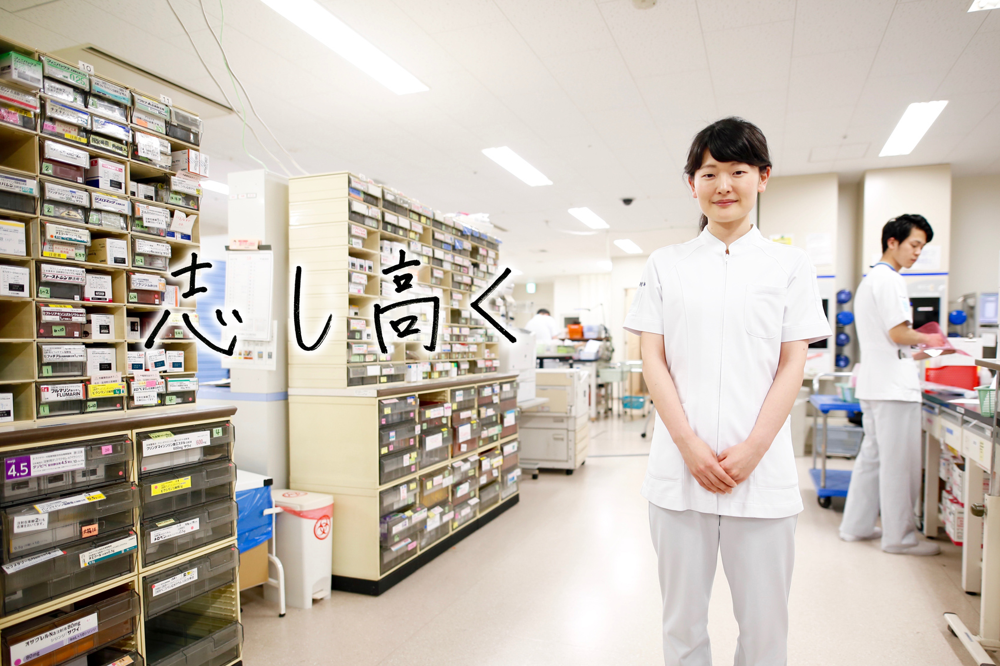

薬剤師
Pharmacist もどる
もどる

■小倉記念病院でやりがいを感じること
患者さんの安心した笑顔を見ること
今年の４月から就職２年目になりました。調剤だけでなく、注射、抗がん剤調製、院内製剤、当直などの幅広い業務を行っています。また、今年の２月からは病棟薬剤師として病棟を担当しています。
実際の臨床現場、自分が提案したことや、意見したことが患者さんの処方に反映されることは、とても責任が伴うものですが、薬剤師としての知識を日々磨くことができます。また、他職種のスタッフと信頼関係を築き、意見を交換できることは、自分の考えを広げることができとても勉強になります。
まだまだ未熟で先輩方々に相談し、教わりながら、薬の専門家として薬物療法に関するより良い提案ができるように日々精進しています。
■これからの夢や希望
心に寄り添える薬のスペシャリスト
私の小倉記念病院でかなえたい薬剤師としての夢は患者さんの心に寄り添える薬のスペシャリストになることです。日々の病棟業務を行う中で、高度な専門知識が求められており、薬剤師としての責任の重さを強く感じています。また常に勉強を続けていかなければ、最新の医療や薬物療法に対応する事が出来ません。薬剤部の先輩方はとても勉強熱心で、限られた患者情報の中から情報収集し、常に患者背景を考え調剤や疑義照会、服薬指導を行なっています。私も目標となる先輩方に少しでも追いつける様に目標を高く持ち、薬物療法やチーム医療への貢献を目指していきたいです。
また病棟業務を行う中で患者さんのニーズを理解し、心に寄り添える薬剤師になれる様日々努力して行きたいと思います。
薬剤師の1日